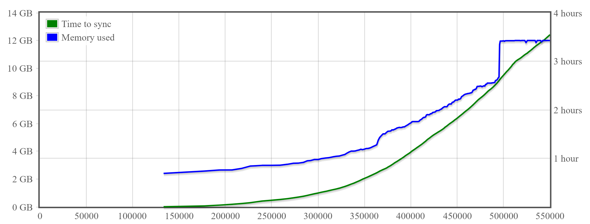

Gocoin
Gocoin is a full Bitcoin solution written in Go language (golang).
The software's architecture is focused on maximum security and good performance.
The client (p2p node) is an application independent from the wallet.
The wallet is deterministic and password seeded. As long as you remember the password, you do not need any backups of your wallet.
In addition there is also a set of more and less useful tools. They are all inside the tools/ folder. Each source file in that folder is a separate tool.
System memory and time needed by Gocoin client to sync BTC block chain up to the given block number:

The data above is from Gocoin 1.9.5 running on 8 vCPUs, 16 GB memory, 200 GB SSD disk VPS from
Google Cloud Platform.
The client node was built with Go version 1.12 beta 1 and the host OS was Debian GNU/Linux 9 (stretch).
Note that Gocoin uses configurable LastTrustedBlock parameter, to avoid verifying scripts from all blocks known as valid.